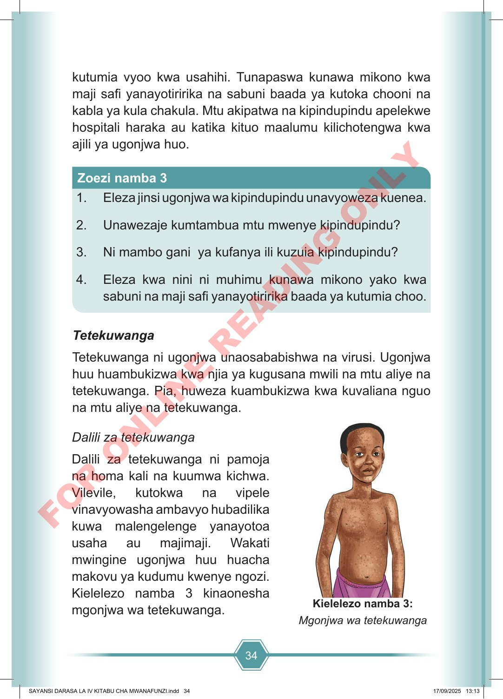

34 kutumia vyoo kwa usahihi. Tunapaswa kunawa mikono kwa maji safi yanayotiririka na sabuni baada ya kutoka chooni na kabla ya kula chakula. Mtu akipatwa na kipindupindu apelekwe hospitali haraka au katika kituo maalumu kilichotengwa kwa ajili ya ugonjwa huo. 1. Eleza jinsi ugonjwa wa kipindupindu unavyoweza kuenea. 2. Unawezaje kumtambua mtu mwenye kipindupindu? 3. Ni mambo gani ya kufanya ili kuzuia kipindupindu? 4. Eleza kwa nini ni muhimu kunawa mikono yako kwa sabuni na maji safi yanayotiririka baada ya kutumia choo. Zoezi namba 3 Tetekuwanga Tetekuwanga ni ugonjwa unaosababishwa na virusi. Ugonjwa huu huambukizwa kwa njia ya kugusana mwili na mtu aliye na tetekuwanga. Pia, huweza kuambukizwa kwa kuvaliana nguo na mtu aliye na tetekuwanga. Kielelezo namba 3: Mgonjwa wa tetekuwanga Dalili za tetekuwanga Dalili za tetekuwanga ni pamoja na homa kali na kuumwa kichwa. Vilevile, kutokwa na vipele vinavyowasha ambavyo hubadilika kuwa malengelenge yanayotoa usaha au majimaji. Wakati mwingine ugonjwa huu huacha makovu ya kudumu kwenye ngozi. Kielelezo namba 3 kinaonesha mgonjwa wa tetekuwanga. SAYANSI DARASA LA IV KITABU CHA MWANAFUNZI.indd 34 SAYANSI DARASA LA IV KITABU CHA MWANAFUNZI.indd 34 17/09/2025 13:13 17/09/2025 13:13 F O R O N L I N E R E A D I N G O N L Y